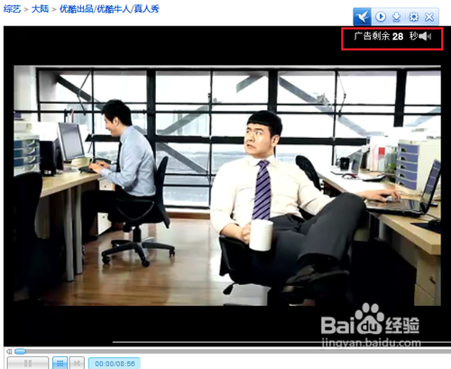
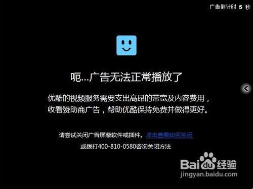

怎么样关掉优酷和土豆等在线视频的缓冲广告
- 浏览： 28795
- 更新：
2012-06-13 04:50
- 标签： 土豆
在满世界都充斥着广告了，现在优酷等视频网站更是气人！这些视频的广告越来越长，超级烦人，甚至已经超过30S了，有的时候还是2个广告“送”给你！以前，这种情况我是会立马关掉不看了的，而现在，我们完全可以与广告“分手”，还我们一片净土！

工具/原料
windows
网络
方法一 自建简单的批处理程序
先删浏览器历史记录。打开IE，按Ctrl+Shift+Del组合键，删除浏览器的历史记录，再关闭IE浏览器：

若不先删除缓冲、不关闭浏览器，设置后不会屏蔽功能马上生效；
打开记事本：

将以下内容复制到记事本：
@ECHO OFF
COLOR 0A
:head
cls
TITLE 屏蔽Ku6、优酷、土豆、迅雷看看等在线视频缓冲广告
::ECHO 屏蔽Ku6、优酷、土豆、迅雷看看等在线视频缓冲广告
echo.&echo.
echo ┌───────::屏蔽视频广告::────────┐
echo │ │
echo │ 1.需要屏蔽视频广告(备份后改写host文件) │
echo │ │
echo │ 2.不屏蔽视频广告(还原host文件) │
echo │ │
echo │ 3.处理视频黑屏问题 │
echo │ │
echo │ 0.退出 │
echo │ │
echo └───────────────────────┘
echo.
set /p sel= 请输入(1,2,3,0)：
echo %sel%|findstr /be "[0-3]*" >nul &&goto:sta||(echo 输入错误，请重新输入&echo.&pause&goto:head)
:sta
if %sel%==1 set words=需要屏蔽视频广告&goto:backup
if %sel%==2 set words=不屏蔽视频广告&goto:recover
if %sel%==3 set words=处理视频黑屏问题&goto:black
if %sel%==0 exit
echo 选择了 %sel%，将设置为【words】
echo.&%0
:backup
TITLE 正在备份host文件
ECHO.&ECHO 正在备份host文件
if exist %windir%\system32\drivers\etc\hosts.bak (echo 备份文件已经存在，不进行备份) else (copy %windir%\system32\drivers\etc\hosts %windir%\system32\drivers\etc\hosts.bak&if exist %windir%\system32\drivers\etc\hosts.bak echo 备份完成)
TITLE 正在完成屏蔽功能
ECHO.&ECHO 正在完成屏蔽功能
>>%windir%\system32\drivers\etc\hosts echo.
>>%windir%\system32\drivers\etc\hosts echo 127.0.0.1 server1.adpolestar.net
>>%windir%\system32\drivers\etc\hosts echo 127.0.0.1 mtips.xunlei.com
>>%windir%\system32\drivers\etc\hosts echo 127.0.0.1 kkpgv.xunlei.com
>>%windir%\system32\drivers\etc\hosts echo 127.0.0.1 statis.kankan.xunlei.com
>>%windir%\system32\drivers\etc\hosts echo 127.0.0.1 recommend.xunlei.com
>>%windir%\system32\drivers\etc\hosts echo 127.0.0.1 cl.kankan.xunlei.com
>>%windir%\system32\drivers\etc\hosts echo 127.0.0.1 advstat.xunlei.com
>>%windir%\system32\drivers\etc\hosts echo 127.0.0.1 recommend.xunlei.com
>>%windir%\system32\drivers\etc\hosts echo 127.0.0.1 cl.kankan.xunlei.com
>>%windir%\system32\drivers\etc\hosts echo 127.0.0.1 MSG1.client.xunlei.com
>>%windir%\system32\drivers\etc\hosts echo 127.0.0.1 pubstat.sandai.net
>>%windir%\system32\drivers\etc\hosts echo 127.0.0.1 biz5.sandai.net
>>%windir%\system32\drivers\etc\hosts echo 127.0.0.1 mcfg.sandai.net
>>%windir%\system32\drivers\etc\hosts echo 127.0.0.1 float.sandai.net
>>%windir%\system32\drivers\etc\hosts echo 127.0.0.1 mpv.sandai.net>>%windir%\system32\drivers\etc\hosts echo 127.0.0.1 atm.youku.com
>>%windir%\system32\drivers\etc\hosts echo 127.0.0.1 Fvid.atm.youku.com
>>%windir%\system32\drivers\etc\hosts echo 127.0.0.1 html.atm.youku.com
>>%windir%\system32\drivers\etc\hosts echo 127.0.0.1 valb.atm.youku.com
>>%windir%\system32\drivers\etc\hosts echo 127.0.0.1 valc.atm.youku.com
>>%windir%\system32\drivers\etc\hosts echo 127.0.0.1 valo.atm.youku.com
>>%windir%\system32\drivers\etc\hosts echo 127.0.0.1 valp.atm.youku.com
>>%windir%\system32\drivers\etc\hosts echo 127.0.0.1 valf.atm.youku.com
>>%windir%\system32\drivers\etc\hosts echo 127.0.0.1 lstat.youku.com
>>%windir%\system32\drivers\etc\hosts echo 127.0.0.1 speed.lstat.youku.com
>>%windir%\system32\drivers\etc\hosts echo 127.0.0.1 urchin.lstat.youku.com
>>%windir%\system32\drivers\etc\hosts echo 127.0.0.1 stat.youku.com
>>%windir%\system32\drivers\etc\hosts echo 127.0.0.1 static.lstat.youku.com
>>%windir%\system32\drivers\etc\hosts echo 127.0.0.1 vid.atm.youku.com
>>%windir%\system32\drivers\etc\hosts echo 127.0.0.1 walp.atm.youku.com
>>%windir%\system32\drivers\etc\hosts echo 127.0.0.1 g1.ykimg.com
>>%windir%\system32\drivers\etc\hosts echo 127.0.0.1 g2.ykimg.com
>>%windir%\system32\drivers\etc\hosts echo 127.0.0.1 g3.ykimg.com
>>%windir%\system32\drivers\etc\hosts echo 127.0.0.1 g4.ykimg.com
>>%windir%\system32\drivers\etc\hosts echo 127.0.0.1 comments.youku.com
>>%windir%\system32\drivers\etc\hosts echo 127.0.0.1 e.stat.youku.com>>%windir%\system32\drivers\etc\hosts echo 127.0.0.1 analytics.ku6.com
>>%windir%\system32\drivers\etc\hosts echo 127.0.0.1 gug.ku6cdn.com
>>%windir%\system32\drivers\etc\hosts echo 127.0.0.1 ku6.allyes.com
>>%windir%\system32\drivers\etc\hosts echo 127.0.0.1 ku6afp.allyes.com
>>%windir%\system32\drivers\etc\hosts echo 127.0.0.1 pq.stat.ku6.com
>>%windir%\system32\drivers\etc\hosts echo 127.0.0.1 st.vq.ku6.cn
>>%windir%\system32\drivers\etc\hosts echo 127.0.0.1 stat0.888.ku6.com
>>%windir%\system32\drivers\etc\hosts echo 127.0.0.1 stat1.888.ku6.com
>>%windir%\system32\drivers\etc\hosts echo 127.0.0.1 stat2.888.ku6.com
>>%windir%\system32\drivers\etc\hosts echo 127.0.0.1 stat3.888.ku6.com
>>%windir%\system32\drivers\etc\hosts echo 127.0.0.1 static.ku6.com
>>%windir%\system32\drivers\etc\hosts echo 127.0.0.1 v0.stat.ku6.com
>>%windir%\system32\drivers\etc\hosts echo 127.0.0.1 v1.stat.ku6.com
>>%windir%\system32\drivers\etc\hosts echo 127.0.0.1 v2.stat.ku6.com
>>%windir%\system32\drivers\etc\hosts echo 127.0.0.1 v3.stat.ku6.com>>%windir%\system32\drivers\etc\hosts echo 127.0.0.1 adcontrol.tudou.com
>>%windir%\system32\drivers\etc\hosts echo 127.0.0.1 adplay.tudou.com
>>%windir%\system32\drivers\etc\hosts echo 127.0.0.1 stat.tudou.com
>>%windir%\system32\drivers\etc\hosts echo 127.0.0.1 stats.tudou.com
>>%windir%\system32\drivers\etc\hosts echo 127.0.0.1 iwstat.tudou.com
>>%windir%\system32\drivers\etc\hosts echo 127.0.0.1 nstat.tudou.com
>>%windir%\system32\drivers\etc\hosts echo 127.0.0.1 adextensioncontrol.tudou.com>>%windir%\system32\drivers\etc\hosts echo 127.0.0.1 acs.56.com
>>%windir%\system32\drivers\etc\hosts echo 127.0.0.1 acs.agent.56.com
>>%windir%\system32\drivers\etc\hosts echo 127.0.0.1 acs.agent.v-56.com
>>%windir%\system32\drivers\etc\hosts echo 127.0.0.1 bill.agent.56.com
>>%windir%\system32\drivers\etc\hosts echo 127.0.0.1 bill.agent.v-56.com
>>%windir%\system32\drivers\etc\hosts echo 127.0.0.1 stat.56.com
>>%windir%\system32\drivers\etc\hosts echo 127.0.0.1 stat2.corp.56.com
>>%windir%\system32\drivers\etc\hosts echo 127.0.0.1 union.56.com
>>%windir%\system32\drivers\etc\hosts echo 127.0.0.1 uvimage.56.com
>>%windir%\system32\drivers\etc\hosts echo 127.0.0.1 v16.56.com>>%windir%\system32\drivers\etc\hosts echo 127.0.0.1 dcads.sina.com.cn
>>%windir%\system32\drivers\etc\hosts echo 127.0.0.1 at-img1.tdimg.com
>>%windir%\system32\drivers\etc\hosts echo 127.0.0.1 at-img2.tdimg.com
>>%windir%\system32\drivers\etc\hosts echo 127.0.0.1 at-img3.tdimg.com
>>%windir%\system32\drivers\etc\hosts echo 127.0.0.1 pro.letv.com
>>%windir%\system32\drivers\etc\hosts echo 127.0.0.1 afp.qiyi.com
>>%windir%\system32\drivers\etc\hosts echo 127.0.0.1 focusbaiduafp.allyes.com
>>%windir%\system32\drivers\etc\hosts echo 127.0.0.1 adslvfile.qq.comadslvfile.qq.com
ipconfig /flushdns >nul
echo.
TITLE 屏蔽完成，请检查是否成功
ECHO 屏蔽完成，请检查是否成功
pause
goto:head
:recover
CLS
TITLE 不屏蔽广告，还原host文件
ECHO.&ECHO 不屏蔽广告，还原host文件
if exist %windir%\system32\drivers\etc\hosts.bak (copy /y %windir%\system32\drivers\etc\hosts.bak %windir%\system32\drivers\etc\hosts) else (echo.&echo 备份文件不存在，无法还原)
ipconfig /flushdns >nul
ECHO.
pause
goto:head:black
TITLE 处理视频黑屏问题
ECHO 处理视频黑屏问题
dir "%userprofile%\Application Data\Macromedia\Flash Player\#SharedObjects\" /ad/b >%SystemDrive%\DirTmp.txt
for /f %%a in (%SystemDrive%\DirTmp.txt) do rd /s /q "%userprofile%\Application Data\Macromedia\Flash Player\#SharedObjects\%%a"
md "%userprofile%\Application Data\Macromedia\Flash Player\#SharedObjects\static.youku.com"
attrib +a "%userprofile%\Application Data\Macromedia\Flash Player\#SharedObjects\static.youku.com"
del /f /q %SystemDrive%\DirTmp.txt
ECHO.&ECHO 操作完成!
pause
goto:head
:end
exit在记事本窗口中，点击“文件”菜单，选择“另存为...”命令；
选择“保存类型”为“所有文件”，切记！

输入包含扩展名的完全文件名，如“DisVideoAd.bat”，点击“保存”按钮保存文件内容；
再双击打开刚刚保存的DisVideoAd.bat文件，如果是在win7中，则应该右击该文件，并选择“以管理员身份运行”命令：

运行程序可看到我们刚才建立的程序界面如下图：

在打开的窗口中输入数字1，选择第一项“1.需要屏蔽视频广告(备份后改写host文件)”，则进行屏蔽广告操作，显示操作结果如上图；
重新打开视频网站，你会发现视频都没有了广告了，还你一个清爽的感觉。
屏蔽视频广告后，广告不会播放了，但可能还会出现“呃...广告无法正常播放了”的黑屏，一样会有几秒的显示：

此时一样可以选择“3.处理视频黑屏问题”功能彻底关闭黑屏现象！！
由于本程序是直接修改HOST文件，所以任何浏览器都适合；
后续需要增加屏蔽的网站，你只要手工增加广告网址即可（注意仅仅是广告网址哦），命令形式：
>>%windir%\system32\drivers\etc\hosts echo 127.0.0.1 ad.xxx.com
只要改“ad.xxx.com”即可。
方法二 安装广告拦截程序
从网络上下载Adblock Pro程序，安装后可发现在IE状态右下角会有一个盾牌图标：

从金山网盘下载拦截规则：
http://dl.dbank.com/c0t3t21nm4
http://dl.dbank.com/c0hpt93v0f
打开IE，右击任务栏右边的Adblock Pro程序图标，选择弹出菜单中的“首选项”命令，打开Adblock Pro程序窗口：

在打开的窗口中，单击“过滤规则”菜单，在弹出的菜单中选择“导入规则...”；
在打开的窗口中找到并打开从金山网盘下载的规则：

在IE中打开视频网站，播放网络视频，可以发现没有了广告喽！
注意事项
源代码中加粗部分是本次更新新增加的，已使用过本程序的请先“2.不屏蔽视频广告(还原host文件)”再执行“1.需要屏蔽视频广告”，否则host文件会重复内容。
本程序并未屏蔽所有视频网站的广告，加之，视频网站还会反屏蔽、更新广告地址，且本人并不能完全的、及时的更新，所以程序并未万能，请知晓！！
选择第一项“1.需要屏蔽视频广告(备份后改写host文件)”时，会自动将host以host.bak的文件名备份，用于以后可以还原回来。
Adblock Pro程序还有更多的可用的规则，可自己通过“订阅”菜单到官方网站添加；
屏蔽的方法还有不少，如用360安全卫士的广告拦截功能或金山的相关功能都可以的。